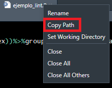
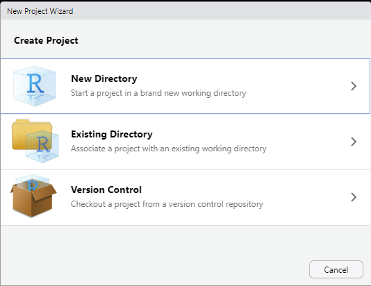
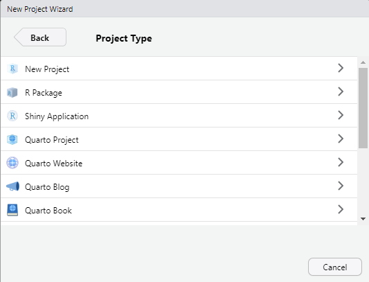
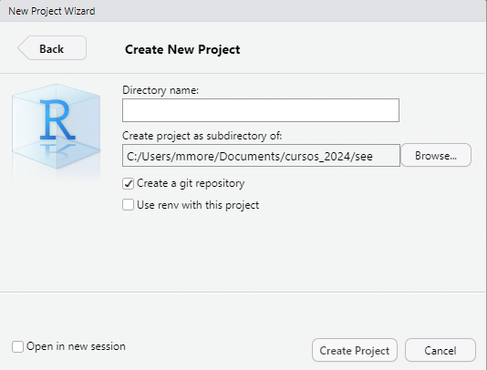
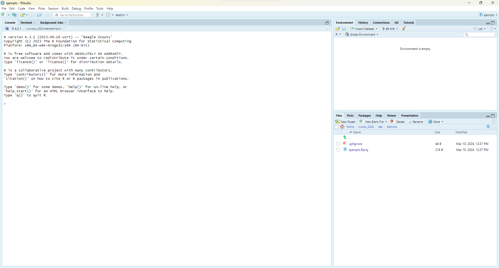
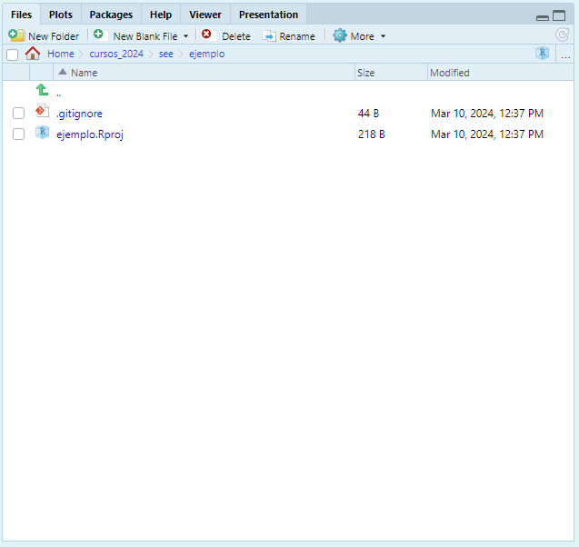

Módulo 2: Proyectos en R y buenas prácticas de programación
Mauricio Moreno, PhD
Introducción
¿Cómo comenzaste tu aprendizaje de R?
Quizá este curso sea tu primera experiencia con R
Para otros (incluyéndome), fue parte de algún curso de estadística
O te viste forzado a aprenderlo por un trabajo (en la marcha incluso)
Independientemente del estilo de programación que forjes, a la larga es común que tus scripts:
Terminen conteniendo miles de líneas
Estén por todos lados en tu computador
Que te sea difícil compartirlos, porque apenas si tú los entiendes
¿Por qué evitar esto?
Escribir buen código nos ayuda a nosotros mismos (en el futuro)
Ya sea en el ambiente laboral o académico:
Al compartirlo, se puede evitar duplicación de esfuerzos
Nos permite reproducir de manera más fácil los resultados obtenidos
Facilita la corrección de errores que hayamos podido cometer
Comenzando por nuestros scripts
Añadiendo comentarios
Podemos añadir comentarios usando
#Se aconseja que un comentario no explique que es lo que hace el código,
Sino, por qué lo hiciste
# Remueve los valores perdidos de la
# variable sex y calcula la media aritmetica
# y desviacion estandar de body_mass_g
# usando la tabla penguins de la libreria
# palmerpenguins
library(palmerpenguins)
penguins %>%
group_by(species) %>%
filter(!is.na(sex)) %>%
summarise(
media_body = mean(body_mass_g, na.rm = T),
sd_body = sd(body_mass_g, na.rm = T),
)Notarás que la forma de la derecha parece un poco tediosa de redactar para cada paso que des en tu análisis. Sin embargo, piensa en ti mismo leyendo tu código en unos cuantos meses en el futuro 😉
Secciones y subsecciones
Código legible
Esta línea de código corre sin errores, pero…
Linting
Linting, desde el punto de vista de la programación, es una expresión en Inglés que se puede traducir al Español como la práctica de estilizar código (linting en Español se traduce literalmente a pelusa ¯\(ツ)/¯)
Cómo estilicemos nuestro código es algo ya personal, sin embargo existen varias “convenciones” que nos pueden guiar a tener códigos más legibles, algunas de ellas:
Deja espacios vacíos antes y despues de
=,<-,-,+,%>%etcUn espacio vacío después de
,Da cortes de línea (enter) donde sea necesario para que las líneas de código no sean muy largas
Deja un espacio vacío entre líneas o conjuntos de líneas que cumplen con una función específica.
Estas y otras convenciones las puedes llevar a cabo a mano, o en R, puedes ayudarte de las librerías
{lintr}y{styler}.
{lintr}
Comenzaremos instalando
{lintr}:install.packages("lintr")En nuevo script en tu sesión de R, copia el siguiente código y guárdalo bajo el nombre “ejemplo_lint.R”
- Sobre la pestaña con el nombre de tu script, haz click derecho y copia el path

- En la consola de R, carga la librería
{lintr}, y ejecuta el comandolintpegando entre comillas el path que acabas de copiar, en mi caso:
{lintr}
- Al ejecutar esas líneas, te aparecerá una nueva pestaña junto a tu consola llamada Markers. Ahí, estarán las correcciones de estilo sugeridas por
{lintr}
{styler}
Como viste,
{lintr}solamente te sugiere los cambios a realizar para mejorar el estilo de tu código.Al contrario,
{styler}lleva a cabo la mayoría de las sugerencias de{lintr}por ti
Instalamos
{styler}:install.packages("styler")En la consola, ejecutamos algo similar a lo que hicimos con
{lintr}
- Ahora tu script debe estar estilizado!
Modularizando tus scripts
Imagina que tu trabajo puede comenzar con una carpeta cuya estructura se ve más o menos así:
Esto está bien en un principio, pero
A medida que agregues más análisis en tu script, puedes fácilmente terminar con miles de líneas de código.
En este caso, ya ni las secciones y subsecciones ayudan mucho para navegarlo.
En tu script, seguramente llevas a cabo múltiples cosas (cargar y limpiar datos, crear modelos, generar figuras…)
Puedes entonces pensar en modularizarlo!
El modularizar un script consiste simplemente en dividirlo en múltiples scripts de menor tamaño basándote en las tareas que realizas en tu código.
Modularización
Este bien podría ser el flujo de trabajo más simple que podriamos imaginarnos:
flowchart LR
A[Cargar librerías] --> B[Cargar datos]
B --> C[Limpiar datos]
C --> D[Análisis Exploratorio]
D --> E[Estadísticos Descriptivos]
E --> F[Modelo Estadístico]
F --> G[Resultados Finales]
Sin embargo, para trabajos sencillos, un flujo tan detallado no hace falta (excepto si tu código va a ser usado para producción). Entonces, también podríamos tener:
flowchart LR
A[Cargar librerías<br>Cargar datos<br>Limpiar datos] --> B[Análisis Exploratorio]
B --> C[Estadísticos Descriptivos]
C --> D[Modelo Estadístico]
D --> E[Resultados Finales]
En resumen, al modularizar tu código, las decisiones que tomes dependerán por supuesto de las necesidades de tu problema y tu estilo de programación.
Nombrando tus módulos
Una opción:
Tips para nombrar tus archivos
Empieza con un prefijo numérico de dos dígitos
Dales nombres descriptivos
Evita espacios vacíos (puedes usar - ó _)
Evita caractéres especiales (como tildes, la letra ñ, etc) o innecesarios al contexto (como la letra “y”)
Y, ¿ahora?
Tenemos la idea básica de modularizar, pero ahora, ¿cómo hacemos para que R sepa cómo usar nuestros módulos?
Proyectos en R
Introducción
Bajo la lógica de un solo script, es necesario el especificar en R cual es nuestro directorio de trabajo.
Esto se lo consigue usando el comando
setwdque funciona de una manera similar a estar copiando el path como vimos para{lintr}y{styler}.Pero al modularizar, esto significaría el cambiar constantemente el path conforme avancemos y cambiemos cosas en nuestro trabajo en cada uno de los módulos que creemos.
Afortunadamente, RStudio nos ofrece la funcionalidad de trabajar bajo la modalidad de Proyectos que ofrece entre otras ventajas:
No especificar repetitivamente el directorio de trabajo
Organizar de manera más flexible la estructura de nuestro proyecto
Poder incluso cambiar la ubicación del proyecto en nuestro computador, sin necesidad de que se comprometa su funcionamiento.
Creando un proyecto

Click en File (Archivo)
Click en New Project… (Nuevo proyecto…)
Creando un proyecto

Click en File (Archivo)
Click en New Project… (Nuevo proyecto…)
Click en New Directory (Nuevo Directorio)
Creando un proyecto

Click en File (Archivo)
Click en New Project… (Nuevo proyecto…)
Click en New Directory (Nuevo directorio)
Click en New Project (Nuevo proyecto)
Creando un proyecto

Click en File (Archivo)
Click en New Project… (Nuevo proyecto…)
Click en New Directory (Nuevo directorio)
Click en New Project (Nuevo proyecto)
Escoger la ubicación donde crearemos el nuevo proyecto y el nombre del directorio.
Creando un proyecto
Creando un proyecto

- En la pestaña de Files (Archivos) es donde podremos poner en práctica la organización de nuestro proyecto.
Conectando nuestros módulos
Ahora que hemos creado nuestro primer proyecto, vamos por un ejemplo básico de cómo conectar los módulos.
- Supongamos que vamos a hacer un análisis de los datos de los Pingüinos de Palmer. Sin adentrarme mucho en el código, crea un script de nombre “00_librerias_funciones.R” con el siguiente contenido:
if (!require("rlang")) install.packages("rlang")
library(palmerpenguins)
library(ggplot2)
library(dplyr)
library(rlang)
# Funcion para plotear el largo vs la profundidad del pico por sexo
# Añade una linea de regresión a los puntos
# Argumentos: especie = especie de pinguino; isla = isla donde vive la especie
plt_function <- function(especie, isla){
penguins %>%
filter(species == parse_expr(especie) & island == parse_expr(isla)) %>%
filter(!is.na(sex)) %>%
ggplot(aes(x = bill_length_mm, y = bill_depth_mm)) +
geom_smooth(method = "lm", formula = y ~ x) +
geom_point() +
facet_wrap(~ sex, scales = "free_x") +
theme_bw()+
labs(title = "Largo de pico vs. profundidad de pico",
subtitle = paste0("Especie: ", especie, ". Isla: ", isla),
x = "largo (mm)", y = "profundidad (mm)")
}Conectando nuestros módulos
- Ahora, en un script aparte de nombre “01_figuras.R”, llamaremos al script que creamos anteriormente usando el comando
source
source("00_librerias_funciones.R")
# Creando plots --------------------------
## Adelie --------------------------------
### Torgersen ----------------------------
plt_function("Adelie", "Torgersen")
### Biscoe -------------------------------
plt_function("Adelie", "Biscoe")
### Dream --------------------------------
plt_function("Adelie", "Dream")- Ejecuta el script “01_figuras.R”
La magia de source
sourcees el conector que necesitamos para relacionar nuestros scripts modularizados.Generalmente el script con prefijo “00” es el que nos ayudará a contener pasos fundamentales. En este ejemplo, he puesto una función sencilla para automatizar un proceso.
Esto es común en la industria, pero para fines académicos y/o de uso a menor escala no es tan necesario. Por esa razón no cubrimos en el curso la creación de funciones.
En los casos más sencillos, recomiendo el usar el prefijo “00” para el script donde lleves a cabo limpieza de datos.
Así, si cambias algo en tus tablas originales de datos, y si has interconectado correctamente tus módulos, puedes hacer que esos cambios en los datos sean tomados en cuenta en todos tus productos de análisis.
Cuando la organización de tu flujo de trabajo es muy complicada, source puede llegar a fallar. En ese caso, te recomiendo darle un vistazo al paquete {here}
Organizando aún más
tesis
│ tesis.Rproj
│ 00_librerias_funciones.R
│ 01_carga_limpieza_datos.R
│ 02_analisis_exploratorio.R
│ 03_estadisticos_descriptivos.R
│ 04_estadisticos_inferenciales.R
│ 05_tablas_figuras.R
│ datos_tesis.xlsx
│ dispersion_a.png
│ dispersion_b.png
│ dispersion_c.png
│ tabla_anova_a.docx
│ tabla_anova_b.docx
│ tabla_anova_c.docxtesis
│ tesis.Rproj
└───datos
│ │ datos_tesis.xlsx
└───figuras
│ │ dispersion_a.png
│ │ dispersion_b.png
│ │ dispersion_c.png
└───R
│ │ 00_librerias_funciones.R
│ │ 01_carga_limpieza_datos.R
│ │ 02_analisis_exploratorio.R
│ │ 03_estadisticos_descriptivos.R
│ │ 04_estadisticos_inferenciales.R
│ │ 05_tablas_figuras.RAntes de terminar
Guarda la huella digital de tu trabajo
Es común que con nuevas versiones de paquetes, algunas funciones son dadas de baja.
Los paquetes pueden también ser dados de bajo del CRAN.
Esto puede producir que de aquí a un par de años un código tuyo simplemente no funcione.
Para facilitar el trabajo detectivesco de encontrar las versiones exactas que usaste para tu análisis, al terminar un proyecto, guarda la información de la sesión de R.
Conflictos
Habiendo miles de paquetes, es común que a veces algunos utilicen los mismos nombres para sus funciones.
Cuando esto ocurre, R te lo dejará saber al cargar un paquete con un mensaje similar a esto
R es un lenguaje extraño
¿Recuerdas que algún momento mencioné que hay que evitar nombrar nuestros objetos de R con nombres de funciones de otros paquetes?
Hace poco conocí de este curioso ejemplo, si creamos una función del mismo nombre que
mean, que haga cualquier otra cosa excepto calcular la media aritmética
- Enmascara en tu sesión a la función base verdadera
mean. Esto no sucede en otros lenguajes de programación.
Fin del módulo 2
Créditos
Este módulo está basado en una buena extensión en la charla Stop making spaghetti (code) de la Prof. Nicola Rennie, PhD
Foto portada por Pat Whelen en Unsplash
Foto final por PARK HONG KYU en Unsplash